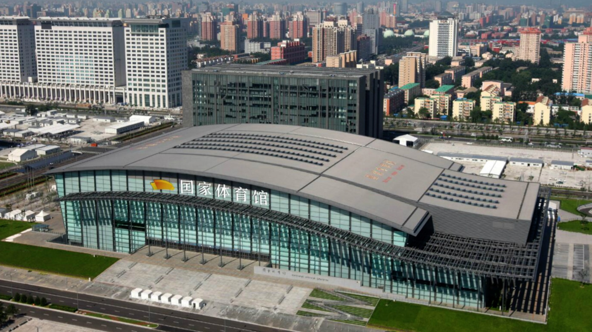
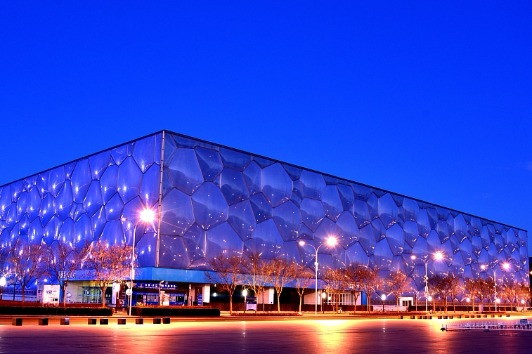
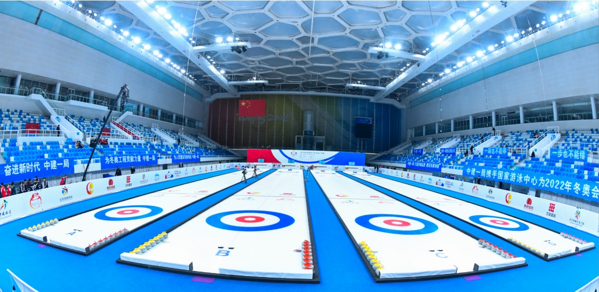
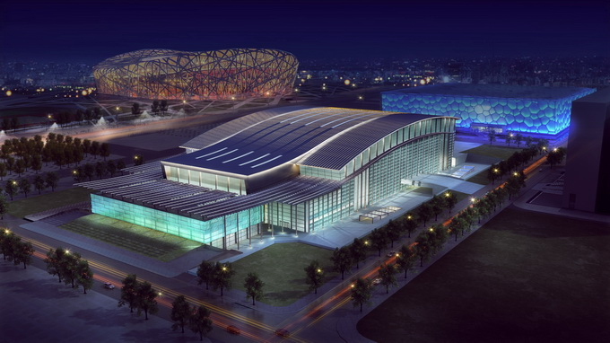

赛事场地-北京赛区
国家体育场这座标志性的体育场因其独特的设计而被称为“鸟巢”，2022年北京冬奥会期间鸟巢不会举办任何体育比赛，但那里将再次成为冬奥会开幕式和闭幕式的举办场地。
国家速滑馆中国国家速滑馆位于中国北京，其设计以独特的外观展现了速滑运动的优雅、精确、速度和动感。该馆被称为“冰丝带”，将在2022年北京冬奥会和冬残奥会期间举办速滑比赛。该设计营造了一种激烈的竞技场氛围，22条光带（或丝带）围绕椭圆形曲面旋转上升，交织成茧，高度约为33.8米。这种“外壳”很大程度地确保了观众的舒适度和便利度。当夜幕降临，建筑外观展现出精彩纷呈的景象，每一条光带都变成了富于动感的灯带，各种灯光效果变幻无穷。国家速滑馆占地17公顷，拥有一条400米长的赛道，冰面达到世界最高标准。场馆可容纳约12000名观众，均靠近比赛场地。地下两层用于场馆服务和停车。




首钢滑雪大跳台中心 首钢滑雪大跳台是单板大跳台运动（Big Air）在全球的第一座永久跳台，也是冬奥历史上第一座与工业遗产再利用直接结合的竞赛场馆。跳台造型设计的灵感来自跳台竞赛剖面曲线与敦煌“飞天”飘带形象的契合跳台主体结构为钢结构，总高度60.5米，长约164米，主体结构用钢量4100吨，其中大量采用了高强钢和耐候钢，节省用钢量达到9.75%，减少碳排量约950吨。跳台结构的剖面曲线在满足Big Air竞赛要求同时，为空中技巧比赛预留了剖面变化的可能性。在造型上三条飘带简洁表达出“飞天”飘带的概念，顶部飘带标识出发区，中部飘带为主体包裹兼有抗风柱、竞赛照明灯杆和安全防护网支撑结构柱，并兼有防风作用，下部飘带与中部飘带和主体结构相互掩映。
国家游泳中心2008年奥运会作为游泳、跳水、花样游泳项目比赛场地的“水立方”，将被改造为“冰立方”，成为冰壶项目的比赛场馆这次改造也将让国家游泳中心成为双奥场馆，也是世界首个“冰水转换”的场馆冰面的温度是零下8.5摄氏度左右，距离冰面1.5米，它变成了10摄氏度到正负2摄氏度，然后到观众区可能变成18摄氏度，这个和原来的温度场分布就有比较大的变化。湿度控制上要把露点温度降到负4摄氏度。可容纳18000名观众的五棵松体育馆将与国家体育馆一起成为2022年冬奥会冰球比赛的主要赛场。
五棵松体育中心场馆进行了为期8个月的改造，改造后场馆配备30x60米和26x60米两种尺寸的可转换冰场，不仅是冰球、短道速滑、花样滑冰等赛事通用型场馆，还能够在6小时内实现“冰篮转换”，还原为篮球场，是名副其实的“双奥场馆”。
北京冬奥村位于北京奥林匹克公园核心区朝阳区奥体文化商务园区11号地块，主要用于接待参加2022年北京冬奥会冰上运动的运动员。奥运村的设施将包括2300个床位，用于接纳运动员和比赛官员前来参加冬季奥运会。随着冬奥会和残奥会的结束，这个以健康和智能为主题的奥运村将成为面向大众出租的公共住房。总建筑面积约33.3万平方米，位于奥体中心以南、中轴线以东，共有20栋住宅，项目一标段工程建筑面积约19万平方米，地下为整体车库，共3层，地上为11栋主楼住宅、最高17层、建筑高度60米，结构形式为地下钢筋混凝土结构、地上装配式钢结构建筑。